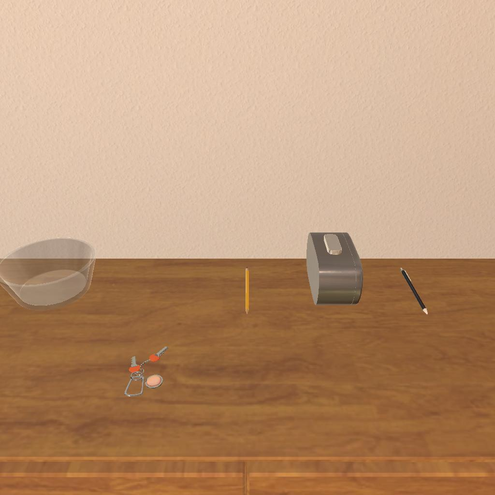

---------------------------------------------------------task: 0---------------------------------------------------------
--------------------------------------------------------------------------------------------------------------------------------------------------------------------
--------------------------------------------------------------------------------------------------------------------------------------------------------------------
Step:--------------------------------------------------------------------------11-------------------------------------------------------------------------------
----------------------------------------
VLM Prompt:
**Task**
Please perform as an embodied AI agent. Our final objective is to look at alarmclock under the desklamp. Below is the plan for completing the task, the current observation, alongside historical data and admissible actions for the next step. Please determine the best action for the next step!
**Plan**
Below is a detailed step-by-step plan to complete the task.
1. Find an alarm clock.
2. Pick up the alarm clock.
3. Locate a desklamp.
4. Turn on the desklamp.
5. Position the alarm clock under the desklamp so that it is illuminated.
6. Look at the illuminated alarm clock to complete the task.
**Current Observation**
Displayed is an image capturing the current position of the agent.
Objects in The Image: ['bowl', 'pencil', 'tape dispenser', 'eyeglasses', 'pen']
**History Information**
Displayed are the previous observations with their corresponding actions.
State 0:
No history.
State 1:
1. Step Index in the Plan: 1
2. Objects: Bedside Table, Lamp
3. Action: go to sidetable 1
State 2:
1. Step Index in the Plan: 2
2. Objects: Bedside Table, Lamp
3. Action: go to drawer 1
State 3:
1. Step Index in the Plan: 2
2. Objects: Bedside Table, Lamp
3. Action: open drawer 1
State 4:
1. Step Index in the Plan: Unknown (Continuation from a previous step)
2. Objects: Lamp, Bedside Table, Open Drawer (potentially containing alarm clock)
3. Action: take alarmclock 1 from drawer 1
State 5:
1. Step Index in the Plan: 4
2. Objects: Bedside Table, Lamp (assumed desklamp), Alarm Clock (previously picked up)
3. Action: use desklamp 1
State 6:
1. Step Index in the Plan: 5
2. Objects: Alarm Clock, Desklamp, Bedside Table
3. Action: close drawer 1
State 7:
1. Step Index in the Plan: 5
2. Objects: Nightstand, Desklamp (illuminated), Alarm Clock (likely held by agent)
3. Action: go to sidetable 1
State 8:
1. Step Index in the Plan: 5
2. Objects: Alarm Clock, Desklamp, Bedside Table
3. Action: take cellphone 1 from sidetable 1
State 9:
1. Step Index in the Plan: 5
2. Objects: Bed, Nightstand, Desklamp, Smartphone (Cellphone), Pencil, Picture Frame, Pillow, Carpet
3. Action: put cellphone 1 in/on sidetable 1
State 10:
1. Step Index in the Plan: 5
2. Objects: Bed, Pillow, Bedside Table, Lamp, Wall, Picture Frame, Pen
3. Action: go to dresser 1
**Admissible Actions**
(1): go to bed 1
(2): go to sidetable 1
(3): go to drawer 1
(4): go to drawer 2
(5): go to drawer 3
(6): go to drawer 4
(7): go to drawer 5
(8): go to drawer 6
(9): go to drawer 7
(10): go to drawer 8
(11): go to drawer 9
(12): go to drawer 10
(13): go to drawer 11
(14): go to safe 1
(15): go to laundryhamper 1
(16): go to garbagecan 1
(17): take bowl 1 from dresser 1
(18): take alarmclock 1 from dresser 1
(19): take keychain 1 from dresser 1
(20): take pen 1 from dresser 1
(21): take pencil 2 from dresser 1
**Analysis Guideline**
1. Analyze the history and current observation, and then determine our current step in the plan and our current place.
2. List all visible objects related to the task in the current observation, without summarizing any as "various items."
3. Analyze the objects in the current observation based on the history and the requirements for the current step, and then determine if we can complete the step with the current observation.
4. Analyze and decide on the most appropriate action to take.
5. Summarize the analysis using the following format: "Analysis: [The summarization of the analysis], The Most Appropriate Action: (i which is the integer.): [Selected action]"
**Notes**
1. We must complete each step of the plan in order and cannot skip steps when the previous ones are not finished.
2. For "Go to" actions listed as "go to xxx [n]", interpret this as there are n distinct actions available: "go to xxx 1", "go to xxx 2", ..., "go to xxx n". Select one specific action from these options instead of using "go to xxx [n]".
3. If receptacles such as drawers, cabinets, and so forth are closed in the current observation, we may try to open them.
4. Pay attention to synonyms and ensure clarity in the terms used.
5. We must determine and provide the single action which must be in the **Admissible Actions**.
6. If there is no history available, we are at the first step and the current place is "Unknown".
**Answer**
Please select the most suitable action by following the **Analysis Guideline**, keeping the above **Notes** in mind.
----------------------------------------
----------------------------------------
VLM Response:
Analysis: The plan requires us to position the alarm clock under the desklamp so that it is illuminated, which is step 5. The current observation shows a desk with various objects, but the desklamp is not visible in this image. Based on the history information, we have already turned on the desklamp and closed the drawer after presumably retrieving the alarm clock. The most recent action was "go to dresser 1," which suggests we are now looking at the top of a dresser. To continue with step 5 of the plan, we need to find the desklamp and position the alarm clock under it. However, since the desklamp is not in view, we cannot complete this step with the current observation. The admissible actions do not include interacting with the desklamp, which implies that we need to navigate to a location where the desklamp is present. Since none of the "go to" actions specify a location that clearly includes the desklamp, the most appropriate action is to return to the sidetable where the desklamp was last interacted with, in hopes of finding it there.
The Most Appropriate Action: (2): go to sidetable 1
----------------------------------------
----------------------------------------
>>> Refine VLM Response and Get Pure Action: go to sidetable 1
----------------------------------------
-----------------------------------------------------------------
Running time: 17.00126576423645 seconds
Total Money: 0
-----------------------------------------------------------------
-----------------------------------------------------------------
Summarization Prompt:
**Context**
Analysis: Since there is no history information, we are at the first step in the plan, which is to find a statue. The current place is unknown. In the current observation, we see a floorlamp next to an armchair with a small table that has a small object on it, which could potentially be the statue we are looking for. Since the plan requires us to find a statue first and it appears there might be one on the table next to the armchair, we should investigate this object to determine if it is the statue we need.
The Most Appropriate Action: (1): go to armchair 1
**Summary**
1. Step Index in the Plan: 1
2. Objects: Floorlamp, Armchair, Small Table, Small Object (potential statue)
3. Action: go to armchair 1
**Context**
Analysis: The plan requires us to position the alarm clock under the desklamp so that it is illuminated, which is step 5. The current observation shows a desk with various objects, but the desklamp is not visible in this image. Based on the history information, we have already turned on the desklamp and closed the drawer after presumably retrieving the alarm clock. The most recent action was "go to dresser 1," which suggests we are now looking at the top of a dresser. To continue with step 5 of the plan, we need to find the desklamp and position the alarm clock under it. However, since the desklamp is not in view, we cannot complete this step with the current observation. The admissible actions do not include interacting with the desklamp, which implies that we need to navigate to a location where the desklamp is present. Since none of the "go to" actions specify a location that clearly includes the desklamp, the most appropriate action is to return to the sidetable where the desklamp was last interacted with, in hopes of finding it there.
The Most Appropriate Action: (2): go to sidetable 1
Please summarize the context by following above examples when providing the summary, and ensure that only the summary is included, without any extra explanation.
**Summary**
-----------------------------------------------------------------
-----------------------------------------------------------------
Summarization Response:
1. Step Index in the Plan: 5
2. Objects: Desk, Various Objects, Alarm Clock, Desklamp (not visible)
3. Action: go to sidetable 1
-----------------------------------------------------------------
-----------------------------------------------------------------
Text Observation:You arrive at loc 1. On the sidetable 1, you see a pillow 1, a desklamp 1, a cellphone 1, and a pencil 1.
-----------------------------------------------------------------
UNSUCCEED